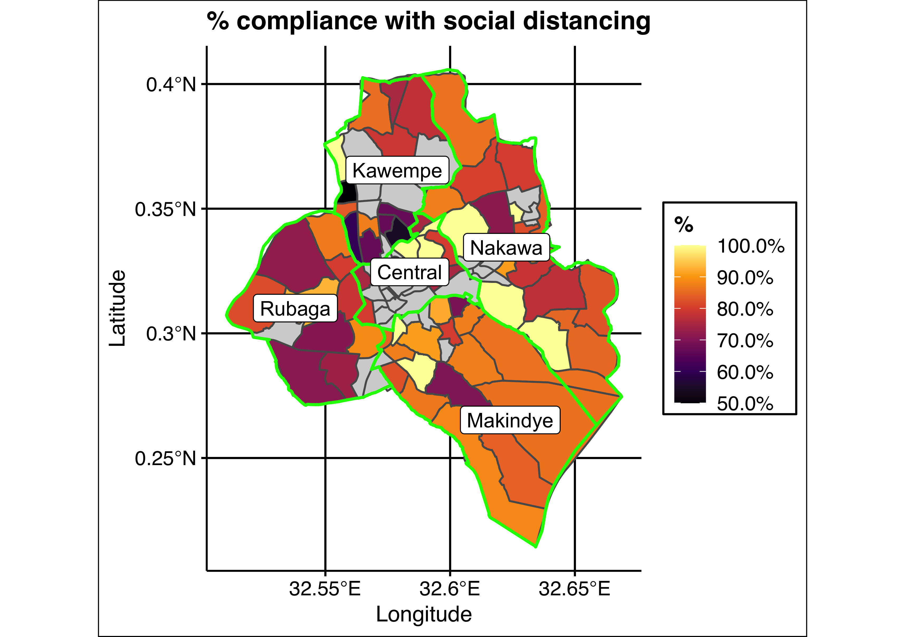

COVID-19 has caused major social, economic, and political disruptions around the world. This project examines the impact of COVID-19 in Uganda’s capital city, Kampala. We conduct a set of surveys with a representative sample of around 2700 Kampala residents to study the social, health, and economic impact of COVID-19, and to assess levels of knowledge about COVID-19, compliance with public health policies, and citizens’ perceptions of government performance. The surveys will be conducted by phone between June 2020 and September 2020 and results will be regularly updated on this dashboard as they become available.
We are a team including experts in the fields of economics, health, and political science. Our team has experience conducting research across sub-Saharan Africa, and over 15 years of research experience in Uganda specifically. The survey is implemented by Innovations for Poverty Action (IPA) Uganda. This survey on COVID-19 builds on an existing project in collaboration with the Kampala Capital City Authority (KCCA). Our team members are listed below:
PIs:
Manuel Bosancianu, research fellow, WZB Berlin Social Science Center
Ana Garcia-Hernandez, research fellow, WZB Berlin Social Science Center
Macartan Humphreys, Professor of Political Science, Columbia University and WZB Berlin
Paul Kiwanuka-Mukiibi, PS Consulting, Uganda
Melina Platas, Assistant Professor of Political Science, NYU Abu Dhabi
Leah Rosenzweig, Postdoctoral Fellow, Stanford University
Lily Tsai, Ford Professor of Political Science, Massachusetts Institute of Technology
Research staff:
Anthony Kamwesigye, Innovations for Poverty Action
Diana Zhu, PhD Student, Massachusetts Institute of Technology
Elly Atuhumuza, Innovations for Poverty Action
Julian Cantor, WZB Berlin Social Science Center
Julio Solís, WZB Berlin Social Science Center
Martin Atyera, Innovations for Poverty Action
Rodrigo Cordova Ponce, Massachusetts Institute of Technology
Sisi Huang, WZB Berlin Social Science Center
Survey team:
Adede Deborah
Amanya Joshua
Amara Andrew
Atukwatse Naome
Bakashaba Kenneth
Biira Jennifer
Esther K
Grace Nabitaka
Kabarungi Sophie
Kembabazi Allen
Kyomuhendo Patience
Ladu Muhammed
Louis Joseph
Mayanja Patrick
Mikisa Stella
Mukunzi Ivan
Musa Muzei
Naigaga Sophia
Nakagolo Esther
Naluwooza Flavia Byaruhanga
Namagembe Angela
Namboowa Betty
Namuganga Sylvia
Nekesa Patience
Senyonjo Julius
Sekawaya Saad
Sylivia Namuganga
This dashboard presents results from the most recent surveys available. Click on each section to see results. The “Aggregates” tab presents results graphically, the “Current averages” tab shows the average value for each indicator, and the “Definitions of measures” tab shows the exact question wording and answer categories.
To download data or search for an indicator, select the “All data” tab. Data can be downloaded as a csv or Excel file.
For comments or questions on the dashboard, please email Julio Solís at julio.solis@wzb.eu.
Funding for this project was provided by the UK Foreign, Commonwealth & Development Office, awarded through Innovation for Poverty Action’s Peace & Recovery Program.